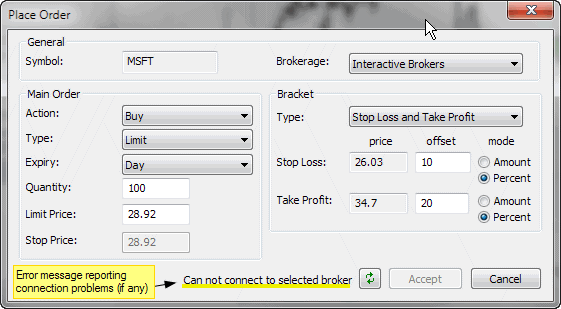

NOTE: This functionality requires an automated trading interface add-on that can be downloaded separately.
To place an order from the chart, please first choose the Insert->Buy Order or Insert->Sell Order menu option, or appropriate buttons from the Order toolbar. Then AmiBroker will allow you to draw a horizontal line with the mouse cursor over the chart. Simply click with the LEFT mouse button over the chart and hold it down. A horizontal line will appear, marking the price level. Once you move the line to the correct level, release the left mouse button to place the order (the following dialog will appear), or press the ESC key to cancel the entire operation.

In the "Brokerage" field, the currently selected trading interface is displayed. After installing the Interactive Brokers automated trading interface (from http://www.amibroker.com/at/), the text "Interactive Brokers" should appear. If no trading interface is installed, the combo box will be empty. If you have installed other trading interfaces, they should appear in the list.
In the "Action" field, you can choose either Buy or Sell - note that the preselected option is the one chosen earlier from the menu or toolbar.
In the "Type" field, you can choose the order type (Market, Limit, Stop, StopLimit, etc.). By default, a "Limit" order is selected.
In the "Expiry" field, you can choose how long a given order will be valid. Currently available options are Day and Good-Til-Canceled.
In the "Quantity" field, you can enter the number of shares / contracts to buy/sell.
In the "Limit Price" field, you can enter the limit price for the order. AmiBroker will fill the value selected on the chart by default.
In the "Stop Price" field, you can enter the stop price for Stop and Stop Limit orders.
In the "Bracket" group, you can choose additional, automatic bracket orders. Bracket orders are "child" stop-loss and/or take-profit orders that are connected to a main "Parent" order and work as an OCA (one cancels another) group (so, for example, when a take-profit is triggered, the corresponding stop-loss is canceled). Bracket prices are calculated automatically from the Limit price. The distance between the limit price and stop-loss / take-profit levels is defined by appropriate "offset" fields. The distance can be expressed in amount (dollars) or percentage of the limit price.
All prices are subject to rounding depending on the current symbol's TickSize setting (see Information window). If TickSize is not defined (i.e., is equal to zero), then AmiBroker assumes 0.01 (one cent).
The Status field (highlighted in yellow) shows the connection status between AmiBroker and the trading interface. Any connection error will be displayed here, and in case of an error, AmiBroker will disable the "Accept" button and will attempt to reconnect every 5 seconds. You can also manually trigger a reconnection attempt by pressing the button with two green arrows.
When the status field shows "Connected", then the Accept button is enabled, and you can press it to place an order. Note that currently, the interface places orders with the Transmit flag set to FALSE. This means that orders are NOT actually transmitted to the exchange but await manual transmission in the TWS. This is a safety measure.
Once the dialog is closed by pressing Accept, the horizontal line showing the limit price entered will stay on the chart. You cannot move it by default, but you can delete it by selecting it and pressing the "DEL" (Delete) key.